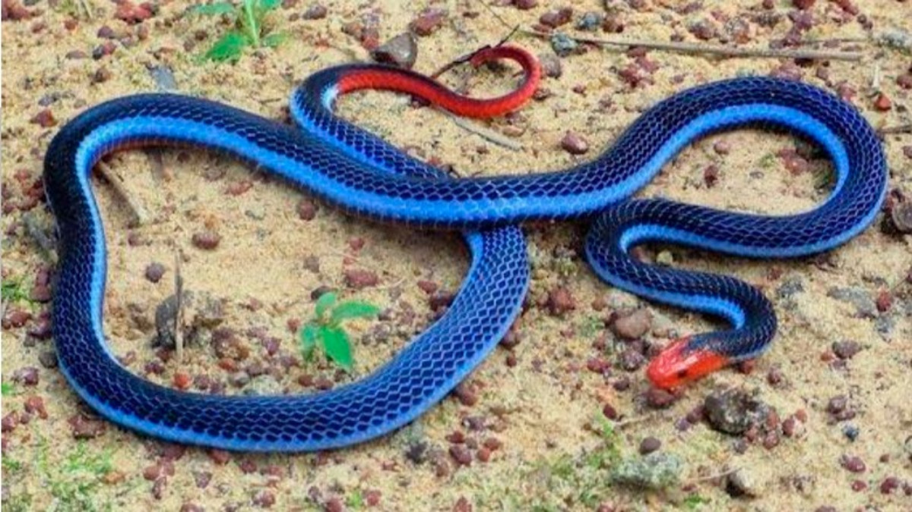

Gusanos quemadores

Esta larva de peculiar aspecto se encuntra en nuestros hogres, principalmente en los jardines, tiene en su cuerpo unos pelos o espinas que están directamente conectados con sus glandulas defensivas las cuales generan una sustancia ponzoñosa que en sus presas las paraliza, pero a nosotros solo nos causa una irritación en el area que hallamos tenido contacto pero lo peligros esta en algunas personas ya que si se resulta ser alergico a estas toxinas puede desencadenar un severo episodio de ataque anafiláctico y puede derivar en la muerte.
Alacrán dorado o amarillo
Todas las especies de alacranes o escorpiones son venenosas pero esta es más frecuente que seencuentre en nuestros hogares y es importantemente venenoso, ya que aunque para la mayoría de las personas no represente un peligro letal para niños menores de 3 años, adultos mayores y personas con problemas cardiacos puede resultar mortal ya que su veneno ataca directamente al sistema nervioso.
Añara violinista
La araña violinista representa un gran peligro ya que esta suele habitar lugares oscuros y secos como debajo de las camas, deabajo de los lavavos, entre la ropa y en sábanas o cobijas, por eso es importante revisar bien y tener una limpieza frecuente ya que su picadura aunque solo en el 2% de ellas es mortal, dependiendo de la cantidad de veneno que alcanze a inyectar, es importante recalacar que en la mayoría de los casos se empezó a podrir el tejido donde estaba la picadura y en algunos de ellos se tuvo que ambutar para evitar que se propagara por más zonas.
Araña viuda negra
Esta es probablemete conocida como la araña mas venenosa del mundo y no se equivocan en eso ya que esta contiene un veneno 15 veces mas potenete que el de una vívora de cascabel, esta suele habitar en lugares con piedra seca como muros de piedra o rocas apiladas, su veneno es mortal si no se subministra un antídoto en menos de hora y media por lo que es importante cubrir con hielo la picadura e inmediatamente ir a que se le subministre el antídoto.
Serpiente coral azul
Esta serpiente suele vivir en lugares secos como entre la madera, hojas secas, o incluso en nuestros zapatos, esta produce uno de los venenos más mortíferos del mundo y aunque parezca bella por su llamativo color azul brillante, debemos aprender que este tipo de colores llamativos indican un potencial peligro, y esta no es la esepción ya que su veneno te puede matar en una hora y lo peligroso de esta no es el tiempo si no que casi no hay instituciones que cuenten con ese antídoto